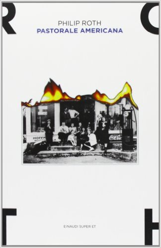

Pastorale americana
(recensione di Kate Ducci)

Autore: Philip Roth
Editore: Einaudi
Pagine: 462
Genere: Narrativa
Anno pubblicazione: 2013
Il titolo fa riferimento al giorno del ringraziamento, unico momento in cui l'America si unisce in una voglia di far festa che include tutti, i nuovi e i vecchi arrivati, maggioranze e minoranze culturali e religiose, trasmettendo un'idea di unione e libertà che è solo una triste apparenza.
Roth parte da lì, dal sogno americano che permette a un giovane ebreo, nel periodo della seconda guerra mondiale, in cui in Europa gli ebrei sono perseguitati e uccisi, di farsi avanti, diventare un asso dello sport, bellissimo e osannato, un ragazzo destinato a impersonare quel sogno americano che sembra a portata di mano per chiunque abbia voglia di farcela.
Ma le intenzioni di Roth sono altre: prendere quel sogno americano, dargli un volto, due occhi azzurri e i capelli biondi di un ottimo ragazzo ebreo, meritevole ed educato, e smontarlo pezzo per pezzo.
Cosa c'è di peggio che prendere un ragazzo, idealista e altruista, dargli tutto con facilità, convincerlo che l'amore per la patria e la famiglia siano le migliori armi di difesa con cui farsi strada, che la patria e la famiglia mai lo tradiranno, condurlo fino all'apice del successo e poi sottrargli ogni cosa, partendo proprio da quelle certezze che aveva considerato come premesse incrollabili nel suo percorso di crescita?
Il protagonista, che assiste alla scalata verso il successo del giovane ebreo soprannominato lo Svedese, è uno scrittore solitario e taciturno, che è cresciuto adorando e imitando quello che per lui era un idolo incontrastato, un uomo che pareva destinato a essere solo felice, a ottenere ogni cosa perché meritevole di averla.
Quando le rispettive esistenze li separano e li portano per puro caso a incontrarsi sulla soglia della mezza età, lo Svedese sembra lo stesso meraviglioso ragazzo americano dei tempi del liceo, con tre splendidi figli, una moglie amorevole, un'attività di famiglia da portare avanti e niente altro da chiedere se non un piccolo favore a colui che ha fatto strada nel mondo della scrittura: aiutarlo a scrivere qualche pagina in ricordo di suo padre, recentemente deceduto.
Il protagonista accetta di collaborare e lo ascolta descrivere nel dettaglio una vita di successo, che sembra senza ombra e senza tracce di infelicità. Ma quando qualche anno dopo viene a conoscenza della morte dello Svedese e di quanto la sua vita sia invece stata duramente segnata da dolori inconsolabili, che l'uomo non aveva avuto la forza di confessargli, inizia un percorso di conoscenza che parte da quel ragazzo tanto adorato per arrivare a se stesso e all'intera umanità.
Decide quindi di scrivere la storia dello Svedese, così come la immagina sulla base dei pochi dettagli appresi da fonti esterne (un divorzio, una figlia con problemi di balbuzie, morta dopo aver fatto attivismo contro la guerra in Vietnam, una moglie che lo aveva tradito e pugnalato alle spalle, una patria che si è rivelata portatrice di valori bugiardi) e di far luce su quelle ombre che il vecchio amico, abituato a dare di se stesso un'immagine vincente, non aveva avuto la forza di tirare fuori.
L'apparenza, ci insegna Roth, è il muro più difficile da abbattere, soprattutto quando vi abbiamo costruito sopra un'intera esistenza, quando tutto ciò che la gente sa di noi e che noi sappiamo di lei, vi ha messo sopra solide basi che possiamo far crollare solo se siamo disposti a gettare la nostra maschera, strapparla via a chi ci sta davanti, saper guardare in faccia valori ipocriti rendendoci conto che sono solo comode menzogne, che puoi far di tutto per salvare te stesso e le persone che ami, ma che non ti sarà sufficiente aggrapparti a tradizione e un buon nome per riuscirci.
Concludo con uno dei passaggi più belli del libro, che si chiude con un punto interrogativo sia per quanto riguarda la storia che la morale. Roth ci dice che ogni cosa è sempre in sospeso, che da ogni evento possiamo trarre un insegnamento ma non sarà mai per tutti lo stesso e che il finale, spesso frutto del caso, fornirà sempre un'immagine distorta della realtà, condizionata da cosa ha avuto in sorte per noi il destino.
«Lotti contro la tua superficialità, la tua faciloneria, per cercare di accostarti alla gente senza un carico eccessivo di pregiudizi, di speranze o di arroganza…; offri il tuo volto più bonario camminando in punta di piedi e l’affronti con larghezza di vedute da pari a pari e tuttavia non manchi mai di capirla male. La capisci male prima d’incontrarla, la capisci male mentre sei con lei; poi vai a casa, parli con qualcuno dell’incontro e scopri ancora una volta di avere travisato. Poiché la stessa cosa capita in genere anche ai tuoi interlocutori, tutta la faccenda è veramente una colossale illusione priva di fondamento, una sbalorditiva commedia degli equivoci. Come dobbiamo regolarci con questa storia che assume ogni volta un significato grottesco? Devono tutti chiudere la porta e vivere isolati come fanno gli scrittori solitari che creano i loro personaggi e poi li fanno passare per persone vere? Capire bene la gente non è vivere. Vivere è capirla male, capirla male e male e poi male e, dopo un attento riesame, ancora male. Ecco come sappiamo di essere vivi: sbagliando. Forse la cosa migliore sarebbe dimenticare di aver ragione o torto sulla gente e godersi semplicemente la gita. Ma se ci riuscite… Beh, siete fortunati»
L'AUTORE - Philip Roth ha vinto il Pulitzer nel 1997 per Pastorale americana. Nel 1998 ha ricevuto la National Medal of Arts alla Casa Bianca, e nel 2002 il piú alto riconoscimento dell'American Academy of Arts and Letters, la Gold Medal per la narrativa. Ha vinto due volte il National Book Award e il National Book Critics Circle Award, e tre volte il PEN/Faulkner Award. Nel 2005 Il complotto contro l'America ha ricevuto il premio della Society of American Historians per «il miglior romanzo storico di tematica americana nel periodo 2003-2004». Recentemente Roth ha ricevuto i due piú prestigiosi PEN Award: nel 2006 il PEN/Nabokov Award e nel 2007 il PEN/Saul Bellow Award for Achievement in American Fiction. Roth è l'unico scrittore americano vivente la cui opera sia pubblicata in forma completa e definitiva dalla Library of America. Nel 2011 ha ricevuto la National Humanities Medal alla Casa Bianca, ed è poi stato dichiarato vincitore della quarta edizione del Man Booker International Prize. Opere di Philip Roth nel catalogo Einaudi: Pastorale americana (1998), Operazione Shylock (1998), Il teatro di Sabbath (1999), Ho sposato un comunista (2000), Lamento di Portnoy (2000), La macchia umana (2001), L'animale morente (2002), Lo scrittore fantasma (2002), Chiacchiere di bottega (2004), Zuckerman scatenato (2004), Il complotto contro l'America (2005), Il seno (2005), La lezione di anatomia (2006), L'orgia di Praga (2006), Everyman (2007), Patrimonio (2007), Il fantasma esce di scena (2008), Il professore di desiderio (2009), Indignazione (2009), L'umiliazione (2010), La controvita (2010), Nemesi (2011), «Ho sempre voluto che ammiraste il mio digiuno» ovvero, guardando Kafka (2011), La mia vita di uomo (2011), Goodbye, Columbus (2012), I fatti (2013), La nostra gang (2014), Il Grande Romanzo Americano (2014) e Lasciar andare (2016).